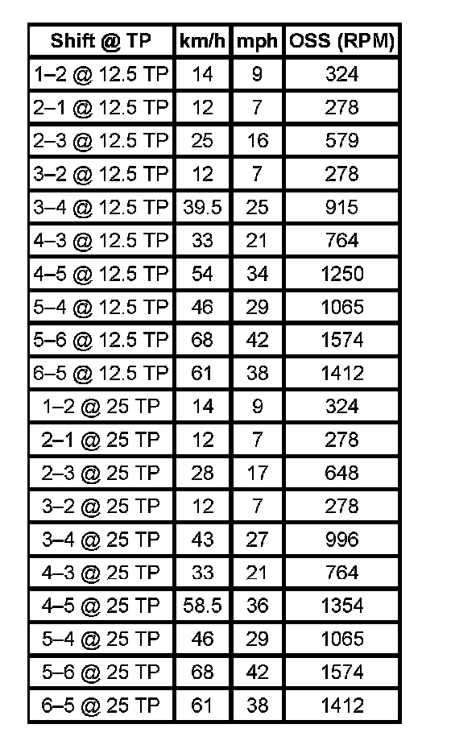
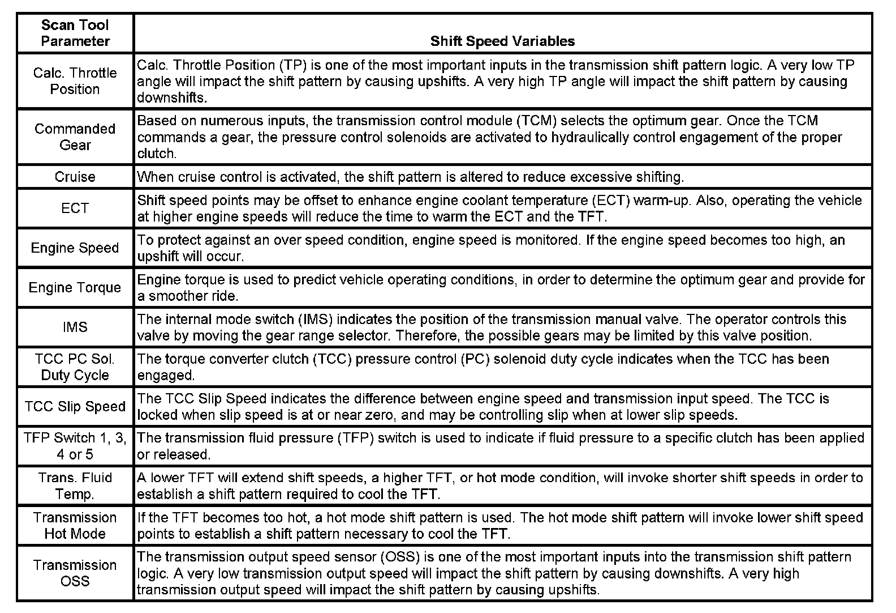

Shift Speed
Shift Speed
Shift Speed:

Important: Shift speed points are affected by many different vehicle and transmission operating conditions. The table above represents shift speed points calibrated at specific throttle angles during normal operating conditions and a temperature range between 0 -130° C (32-266° F). These shift speed points are also based on an axle ratio of 3.42, and assume a production-intent tire size. The table below illustrates a number of different variables that influence these shift speed points. Based on a given operating condition, these variables may override the normal shift speed points. To assist in monitoring the different variables, the respective scan tool data parameter is also listed.
